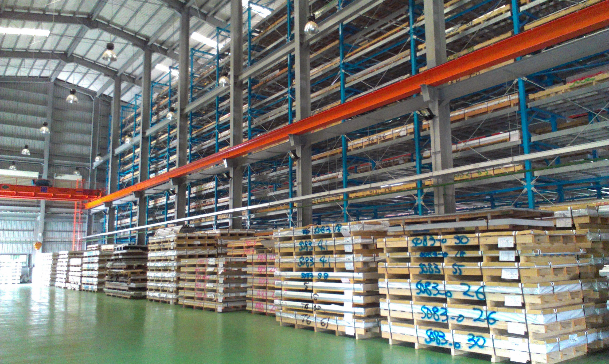

跨越數十載的專業累積，連結國內外高品質鋁合金供應鏈，為各產業提供最堅實的材料後盾。
新懋鋁業股份有限公司於 1996 年在台中成立。 我們深深瞭解顧客滿意的重要性，除了服務大台中地區客戶外，更積極在龜山、竹北、高雄地區設立據點，以在地精神提供快速優質的供料服務，並持續將範圍擴及全台地區，期望未來更能夠以優質的服務能力及技術供應給全球的客戶。
新懋鋁業客戶群已經遍及全省，我們提供客戶精準的鋁合金板加工技術、準確的交貨時程，並於預算內充分滿足客戶需求。

憑藉先進的鋸切與銑面設備，提供高精度尺寸加工，並建立極速調撥物流，確保在預算與時間內精準交付。
傾聽客戶的需求，以最經濟的成本、最適的品質協助客戶成功，建立彼此牢不可分的夥伴關係。
穩定發展的同時，持續投資高階精密機具與專業人才培訓，不斷提升競爭力，朝供應全球客戶的目標邁進。